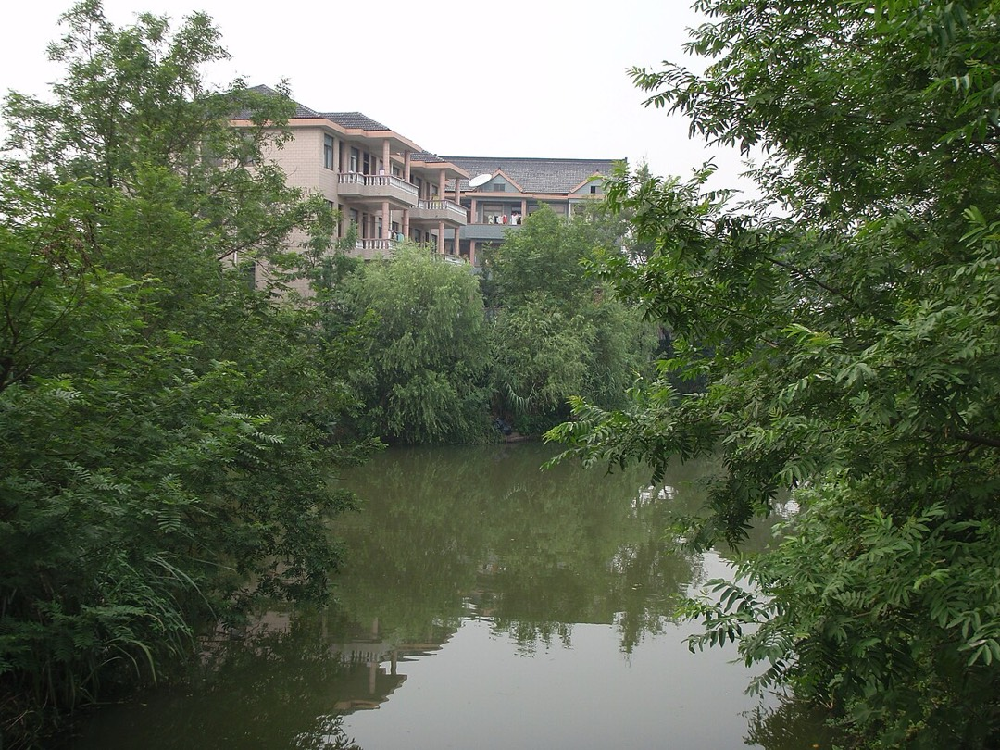
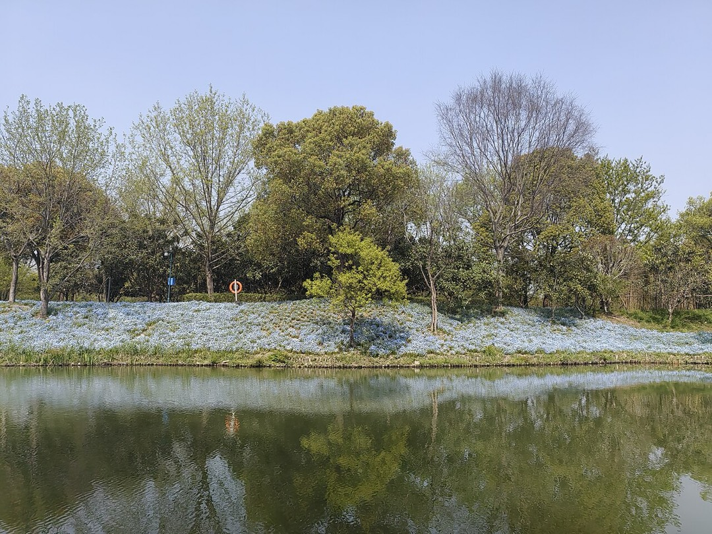
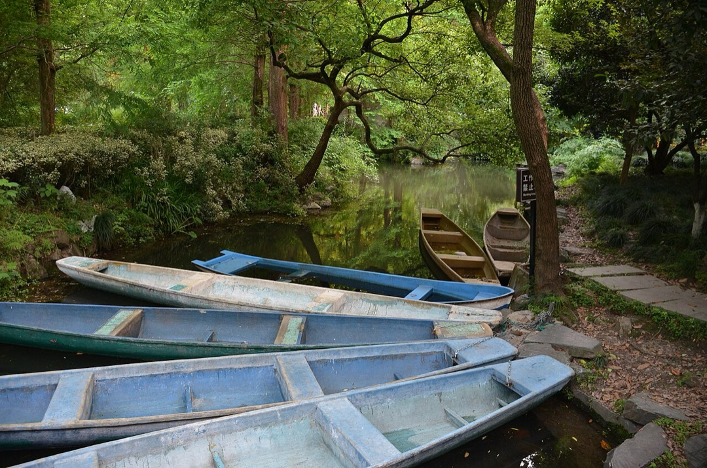
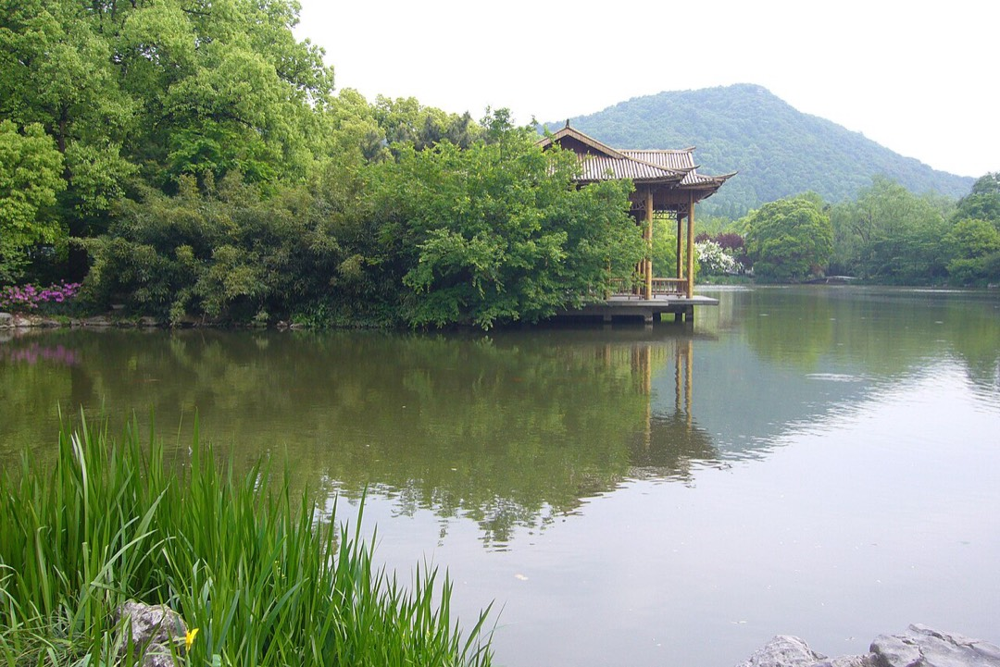

壹
行程安排
ITINERARY · 默认展开 · 点击可收起
▾
08:30
滨江出发
导航设「西溪天堂·栖悦城」或「中国湿地博物馆」(两者相邻,水族公园就在栖悦城 BF 层)。滨江过去约 20 km(OSM 路网测算),过江加市区,车程 35–50 分钟,周六上午紫金港路、文三路一段堵车是常态,留一小时最稳。
▾
09:40
到场先做两件事
① 确认当天营业时间与票价——这馆 7 月 23 日起试营业、9 月初仍在试营业,官方价目与开闭馆时间尚未公示,售票处问一句最准;② 领/拍下当天演艺时刻表(鲛人剧场、海兽剧场场次逐日调整)。开业不到 10 天就卖出 10 万张票、日均客流过万,周末能线上先买就先买,开馆头一小时人最少。
▾
10:00
主线:湿地 → 江河 → 海洋
按场馆设计的叙事顺序走一遍:西溪湿地生态缸(水草成林,像一片水下森林)、西湖生态缸(鲫鱼、草鱼悠游)、钱塘江流域缸(鲢鱼、鳊鱼成群),再一路过渡到珊瑚礁鱼、淡水热带鱼与海洋展区。全馆鱼类品种接近 1000 种。
▾
11:00
两场特色演艺
鲛人剧场以江南文化为底:中式石拱桥、水下荷塘做场景,水下表演配东方水墨意境,是国内少见的"中式人鱼秀";海兽剧场是海狮行为展示加科普互动,带孩子最买账。两场都提前 15 分钟进场占位,以当天时刻表为准。
▾
12:15
午饭
出馆上楼就是栖悦城的餐饮层,西溪天堂商业街也在步行范围:西溪别院(杭帮菜,人均约 122 元,招牌吊烧脆皮乳鸭、私房铁锅鱼头,10:30–14:00 / 16:30–21:00)、穿越·外婆家(人均约 129 元);想快就肯德基、星巴克。出闸前问一句能否当日再次入馆。
▾
13:30
水母森林 + 海底隧道 + 西溪豚岛
下午补上午没看的:水母展示区(关闪光灯、别拍玻璃,出片全靠反射光)、海底隧道、爬行动物展示区,以及独立分馆「西溪豚岛」——水豚萌宠互动加自然教育,一票畅玩,可在工作人员指导下参与互动;投喂与主题下午茶按现场运营逐步开放。
▾
14:40
顺便看一眼「蓝眼泪秘境」
这是浙江首家室内蓝眼泪主题展馆,把温州、平潭的荧光海搬进室内。7 月底官方口径是"施工收尾、预计八月正式亮相"——9 月是否已开放未核实,到现场问一句;开了就是这趟的意外彩蛋,没开就当留个下次再来的理由。
▾
15:40
出馆 → 中国湿地博物馆
隔壁就是中国湿地博物馆(天目山路 402 号),2024 年焕新回归,馆里有 32.5 米超长巨幕。9:00–16:30 开放、16:00 停止入馆、周一闭馆,个人参观无需预约,顺路看个大概刚刚好。
▾
16:30
西溪国家湿地公园
政府公示口径 8:00–17:30(4 月 1 日–10 月 7 日;部分攻略写 7:30–18:30,以现场为准),进主园区门票 80 元、微信「西溪湿地」可提前预约;福堤、绿堤、御临路沿线、雕塑园南北区免费开放,不进闸也能沿水走一段。九月下旬正逢西溪火柿节前后(往年 9 月下旬–10 月中旬,以今年公告为准),园里通常有柿子主题的市集与活动。
▾
18:00
日落
2026-09-19 日落 18:00,日出 05:46。湿地水网密、视野矮,看的是水面反光与树影;福堤、绿堤一带随便找个桥站定就好,别特意跑远。
▾
19:00
晚饭 + 返程
就近在栖悦城/西溪天堂吃,或往蒋村、文二西路一带找馆子;不想收场还能在综合体里看场电影。吃完原路回滨江,20:30 前后到家——这条线比去湘湖多花一刻钟车程,换来的是整个下午都在室内外之间自由切换。
贰
当日天气 · 时效信息
SAT 2026-09-1929.2℃
周六 · 阴 · 21.8 – 29.2 ℃
快照 2026-09-15 11:15
数据来自 Open-Meteo 公开数值预报(西溪坐标 30.27°N, 120.07°E)。页面打开时自动刷新一次,失败则显示下面这份出行前的快照。西溪与湘湖同一座城、同一天,但两头各有一小块自己的天气——这篇用的是西溪的点位。
天气阴
气温21.8–29.2℃
体感最高31.6℃
降水概率≤29%
累计降水0.0 mm
风 / 阵风11.9 / 25.9 km/h
湿度55–77%
紫外线7.1 · 强
日出05:46
日落18:00
主要在场时段10:00–17:30
建议出发08:30 前
试营业
这馆 7 月 23 日才开门试营业,票价和营业时间都还没见到公开公示。出发前一天用官方公众号/小程序或直接打电话问清:几点开馆、当天是否限流预约、票价多少。别照抄网上攻略里的数字——新馆的价格体系往往边开边调。
客流
这是"开业即爆"的场馆:开业不到 10 天售票突破 10 万张、日均客流过万。周末排队、甚至当日现场票售罄都有可能——能线上先买就先买,到馆也尽量赶开馆头一小时。
彩蛋
「蓝眼泪秘境」原计划 8 月亮相,现在是否已开放未核实。浙江首家室内蓝眼泪主题展馆,真开了值得多留 30 分钟;没开也别失望,馆内本身就有水母森林和海底隧道。
室内
场馆在 栖悦城 B1,以室内为主,下阵雨基本不影响,这是它比纯户外行程稳的地方。但湿地那段是露天的——伞要带。
温差
室外 22–29℃,馆内为了养鱼常年偏凉、湿度高,一进一出差好几度。给孩子和自己都带一件薄外套,别在馆里冻着看鱼。
周末
亲子场馆,周六上午是高峰。开馆即到,先看剧场场次表再定动线,比"走到哪看到哪"少排一半队。
停车
栖悦城车库约 1100 个车位、3 小时内免费,超出约 6 元/小时;湿地入口停车场约 5 元/小时。周末车位紧,9:30 前到最稳——馆就在商场里,停好车一天不用挪。
台风
9 月仍在台风影响期。出发前 48 小时看中央气象台路径预报;大风大雨时湿地可能临时闭园,但室内场馆受影响小,行程有退路。
防晒
紫外线 7.1(强),午后体感 31℃ 上下。湿地那一段基本没有遮阴,遮阳帽、防晒、水都要带。
近十年同期气候(2016–2025 年 9 月 15–23 日,西溪点位,Open-Meteo 历史再分析,90 天样本):
平均最高 27.4℃
平均最低 20.8℃
有雨日占比 50%
最大单日降水 66.8 mm
年份间最高温区间 18.7–35.7℃
九月中下旬的杭州:十年里有雨的日子占一半,早晚已经转凉。这趟行程的抗雨能力比一般户外游强——水族馆全在室内,真下雨就把馆内展区和剧场排满,把湿地留到雨停的缝隙。折叠伞 + 薄外套照旧是最划算的两件装备。
叁
怎么去
GETTING THERE推荐 · 自由支配
🚗 自驾(滨江出发)
- 导航:「西溪天堂·栖悦城」或「中国湿地博物馆」——水族公园在栖悦城 BF 层(西溪天堂:西湖区紫金港路 21 号,西溪湿地东南角、紫金港路与天目山路口)
- 里程:约 20 km(OSM 路网测算),车程 35–50 分钟;周六上午过江与紫金港路、文三路一段堵车是常态
- 停车:栖悦城车库约 1100 个车位、3 小时内免费,超出约 6 元/小时;湿地各入口停车场约 5 元/小时、40 元/天封顶(来自商业体投放稿与攻略口径,以现场公示为准)
- 顺路:出馆步行可到中国湿地博物馆与西溪湿地福堤一带,不用挪车
不想开车
🚇 地铁 / 🚌 公交
- 3 号线「东岳」站(首选):车站与栖悦城衔接,也是中国湿地博物馆那一站,A 口出来步行约 600 米到西溪天堂/栖悦城——水族公园在 BF 层,基本不用再打车
- 公交 49 路、149 路:直接停「西溪天堂」站,下车就是综合体出入口
- 顺带记下别的门:周家村主入口走 3 号线西溪湿地南站,高庄走花坞站,龙舌嘴走洪园站,北门走 19 号线西溪湿地北站(E2 口往西溪国家湿地公园、福堤)——取决于你从哪个口进湿地
- 适合:晚上在湿地看完日落后回城,地铁比找车位省心
新馆刚开,门口的导视与入口位置可能还在调整:到了栖悦城先找 B1 的水族公园指引牌,或直接问商场服务台。
肆
门票与开放口径
TICKETS未公示西溪水族公园票价(试行期)
80 元西溪国家湿地公园(官方公示)
免费福堤 · 绿堤 · 御临路 · 雕塑园
先把话说清楚:西溪水族公园的票价与营业时间,我没有查到官方公示。这馆 2026 年 7 月 23 日开始试营业、9 月初仍在试营业,官方只留了一句"营业时间与演出场次以官方平台和现场公告为准";面积口径也不统一(政府口径近 8000 ㎡,另有报道写近 1 万㎡、约 1.2 万㎡)。网上能搜到的票价数字要么是别的场馆、要么是回收的旧数据——别照着下单。
能确认的计费结构:一票畅玩双馆。门票包含主馆与独立分馆「西溪豚岛」,不分开卖(商业体与行业报道口径一致,在售的"水族公园 + 西溪豚岛"套餐就是这个结构)。具体金额仍未见公示,以官方渠道/售票处为准。
西溪国家湿地公园(就在隔壁,同一个大门片区):地址 天目山路 518 号,门票 80 元;开放时间 8:00–17:30(4 月 1 日–10 月 7 日)、8:00–17:00(10 月 8 日–次年 3 月 31 日)。免费开放区域:福堤沿线、绿堤沿线、御临路沿线、雕塑园南北区域——不想买票也能沿水走一段。以上为杭州市园林文物局 2026-05-15 公示口径。
中国湿地博物馆(天目山路 402 号)紧邻场馆西侧,2024 年焕新回归、馆内有 32.5 米超长巨幕。9:00–16:30 开放、16:00 停止入馆,周一闭馆;个人参观无需预约,团队预约 0571-89514033。3 号线东岳站 A 口步行约 600 米。是否免票没查到官方口径,身份证带上。
年卡类:水族公园不在杭州公园年卡适用范围(年卡覆盖动物园、植物园、岳王庙、六和塔、虎跑、云栖竹径等);西溪湿地能否凭公园年卡/市民卡免票,攻略口径说可以、政府收费公示未单列,未核实——带卡的话在闸口问一句。
伍
场馆与演艺
WHAT'S INSIDE
🌿
西溪湿地生态缸
全馆最"西溪"的一缸:根系发达的水草密集成林,像一片水下森林,虎纹银板鱼、红魔王银板鱼、石美人在其间群游。
🐟
西湖 / 钱塘江流域缸
西湖缸里鲫鱼、草鱼闲适穿梭;钱塘江流域缸里鲢鱼在石缝探头、鳊鱼成群巡游——全是你从小认识的本土鱼。
🧜
鲛人剧场
以江南文化为灵感:中式石拱桥、水下荷塘做场景,水下表演配东方水墨意境。国内少见的中式"人鱼"秀。
🦭
海兽剧场
海狮行为展示 + 趣味互动 + 海洋知识科普,节奏轻快,是全场最适合带孩子的一站。
🎐
水母展示区 · 海底隧道
水母区出片率最高(关闪光灯、别拍玻璃);海底隧道抬头就是鱼群,人多时靠边走,别停在通道中间。
🦫
西溪豚岛(独立分馆)
以"自然绿洲"为主题的水豚萌宠互动与自然教育空间,与主馆一票畅玩;可在工作人员指导下参与互动。投喂、主题下午茶等按现场运营逐步开放。
✨ 蓝眼泪秘境(在建 / 可能已开)
浙江首家室内蓝眼泪主题展馆,把温州、平潭海边的蓝色荧光海搬进室内。2026-07-28 官方报道口径是"加紧建设、预计八月正式亮相",9 月 19 日是否已开放未核实——到场馆问一句,开了就多留半小时。
全馆主线是「湿地 → 江河 → 海洋」,叙事线索取自西溪湿地、西湖、钱塘江这三处杭州代表性水域;这也是它被称为全国首个以湿地生态为核心主题的水族公园的原因。建议至少留 2–2.5 小时在馆内(不含演艺占位时间)。
陆
一天怎么走
ONE-DAY ROUTE
1
上午 · 水族公园:开馆即入,先走湿地→江河→海洋主线,再看 11 点前后的演艺
2
中午 · 栖悦城:商场里解决午饭,顺便出馆透气、补防晒
3
下午 · 回馆补漏:水母区、海底隧道、西溪豚岛、爬行动物区,以及可能已开的蓝眼泪秘境
4
傍晚 · 中国湿地博物馆:隔壁十几分钟,看一眼巨幕与湿地科普
5
日落前 · 西溪湿地:走福堤/绿堤免费区域,或买 80 元门票进主园区
6
18:00 · 日落收尾:水面反光 + 树影,然后回栖悦城吃饭返程
为什么把湿地放在最后:湿地开放到 17:30、日落 18:00,而水族公园是室内、全天都能进。先用室内馆吃掉上下午最热最晒的时段,把户外留给光线最好的一段——这也是这篇不建议"先湿地后水族馆"的原因。
柒
费用计算器
BUDGET2
元/人
水族公园门票0
西溪湿地门票0
午餐(商场/馆内,人均约 60)120
油费 + 停车(整车,估算)140
合计
260
门票一栏默认 0,是因为它确实还没公示——请按官方渠道当日票价填入,计算器会自动重算。一票畅玩双馆(主馆 + 西溪豚岛),不用另买豚岛票。午餐按人均 60 元估(商场餐饮人均 120 上下也常见,按自己的吃法调);油费加停车按整车 140 元估——栖悦城 3 小时内免费、超出约 6 元/小时,实际停车费可能更低。西溪湿地 80 元为杭州市园林文物局公示价。
捌
行前清单
CHECKLIST · 记得勾选✓
出发前确认水族公园营业时间、票价与是否限流预约(官方公众号/小程序/电话)✓
确认「蓝眼泪秘境」是否已开放(现场问售票处)✓
薄外套(馆内常年偏凉、湿度高)✓
折叠伞 + 防晒(近十年同期一半的日子有雨,紫外线 7.1)✓
充电宝(拍照 + 导航;馆内光线暗,续航掉得快)✓
出发前查台风预警与景区开放公告✓
9:30 前到栖悦城(周末车位紧张)✓
进场先拍当天演艺时刻表,按场次倒排动线✓
若出馆吃饭,先问闸口能否当日再次入馆✓
停车位置拍张照(商场车库分区多)0 / 10
玖
顺路:湿地与博物馆
NEARBY
西溪国家湿地公园(4A)天目山路 518 号,门票 80 元(政府公示 4/1–10/7 开放 8:00–17:30),微信「西溪湿地」可预约 7 日内、每证每日 1 次,咨询 0571-88106688。免费区域:福堤、绿堤、御临路沿线、雕塑园南北区。经典走法是周家村 → 深潭口 → 河渚街「西溪且留下」→ 高庄;秋雪庵是赏芦最佳点。
中国湿地博物馆天目山路 402 号,就在场馆西侧。2024 年焕新回归,有 32.5 米超长巨幕与湿地生态科普。开放时间/门票以官方公告为准。
福堤 / 绿堤免费开放的堤岸线,是看水面、拍倒影、推婴儿车散步的首选;日落前后光线最好,人也不算多。
栖悦城(奥莱商业)场馆所在的商业体,吃饭、逛街、避雨、补给、看电影都在这里解决;停车也停这儿(约 1100 位,3 小时内免费)。
西溪火柿节西溪的柿子季是这一带的年度大事(往年 9 月下旬–10 月中旬,以今年官方公告为准),园内通常有市集与主题活动——9 月 19 日正好卡在开幕前后,进园先看当天公告。
这一片的最大好处是三种玩法叠在同一处:室内水族馆 + 免费湿地堤岸 + 博物馆。下雨就多待馆内,天晴就把下午交给水面,不用为天气改行程——这是它比跑远郊景区更适合"周六临时起意"的地方。
拾
实用贴士
TIPS新
把它当"新馆"对待。试营业期的票价、开闭馆时间、展区开放范围都可能调整,出发前一天确认一次,到了现场再确认一次。
时
8:30 前出发,开馆即入。亲子场馆的周末高峰在 10:30 之后,早到一小时,剧场好位置和车位都还在。
演
先定场次,再排动线。鲛人剧场与海兽剧场的时间逐日调整,进场先看时刻表,提前 15 分钟入场。
拍
关闪光灯、别拍玻璃。水母区与暗光展缸靠反射光最好看;闪光既惊扰动物,也只会拍到一片白。
娃
推车能带进商场,馆内动线也友好。西溪豚岛有互动环节,听工作人员安排;馆内凉,给孩子多备一件。
食
吃饭交给栖悦城。场馆在商场 B1,上楼就是餐饮层,比景区餐厅省事也便宜;想省钱可以逛完再吃。
车
车停商场,人走湿地。出馆后去湿地、博物馆都在步行范围,不用来回挪车。
险
9 月看台风。大风大雨时湿地可能临时闭园,室内场馆影响小——把馆内排满,行程照样成立。